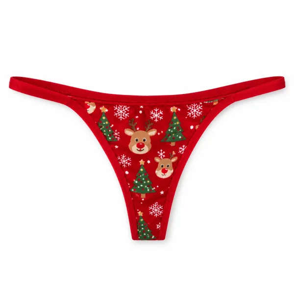

01
Prix
Le string à 5 € le plus cher du monde
Un string à 5 €, livré en fourgon blindé, escorté par deux agents de sécurité et un notaire. Pour une seule commande.
Voir la campagne
- Le plan
- On tire au sort une commande. Elle est livrée à Bruxelles dans une mallette menottée, avec gants blancs et discours officiel. Vidéo de 30 s façon publicité de joaillerie.
- Ce que ça dit
- Qualité de luxe, prix de 5 €. Le décalage fait le message.
- Garde-fous
- Accord écrit de la personne livrée, visage flouté si elle le demande. Location d'un véhicule de transport de fonds : devis à demander.